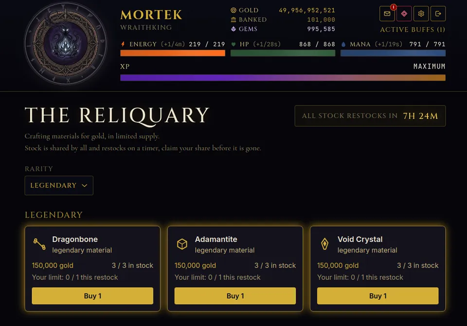

Everyone asks the same thing after the first day: how do I rank up faster in Shadowrealm? There is no secret button, but there is an order of operations. Shadowrealm: Age of Darkness is paced by energy and by timers, so progress comes from spending both well. Here is what I would upgrade first, with the real thresholds from the game.
The eight ranks and what they ask of you
Your rank is derived from XP. The thresholds are fixed, and they grow fast:
- Peasant: 0 XP
- Cutpurse: 1,000 XP
- Bandit: 5,000 XP
- Reaver: 20,000 XP
- Cutthroat: 75,000 XP
- Warlock: 250,000 XP
- Shadowblade: 700,000 XP
- Wraithking: 2,600,000 XP
Each step is roughly three to four times the last, so the early ranks fly by and the late ones are a long project. That is why picking actions that pay good XP per point of energy matters more than anything else. If you are brand new, start with the beginner tips and return here once you have a few ranks.
Priority 1: move to the best city you can unlock
Actions pay noticeably better in higher cities. Shadowmere opens at rank 3, Duskholm at rank 5 and The Dark Citadel at rank 7, and each city hosts its own set of actions. As soon as you reach a new unlock rank, travel and switch your energy to the new actions. Travel has a 15 minute cooldown, so plan one trip rather than several.
One note on cities: after an Ascension reset, travel, stables, heists and city actions re-lock on your live rank, so a returning player re-climbs through the cities again.
Priority 2: raise your success chance
An action's success chance is clamped between 5 and 95 percent. Luck adds 0.5 percent per point and attack adds 0.3 percent per point, and repeating an action builds a familiarity bonus. A failed attempt still gives a quarter of the XP, but a success gives full XP plus gold and drops, so a higher chance directly raises your income per point of energy.
You gain 5 talent points for each rank after the first, so 35 points by Wraithking. Spreading them across all eight stats (attack, defense, speed, luck, stamina, magic, crit, dodge) is rarely best. For a progression build, luck and stamina are the sensible first picks: luck for odds, stamina because it increases your maximum energy, and more energy means more actions between logins.
Priority 3: fill every gear slot
You have 12 slots. An empty slot is wasted power, and even common gear adds stats. Gear rarity goes common, rare, epic, legendary, mythic and divine, and gear is gated by rank, so keep checking for upgrades after each rank-up.

Gear can come from action drops, crafting, the marketplace and the Black Market. The Black Market offers six rotating items, with gear priced at double, with the rarity you can see tied to your rank: common from rank 1, rare from 2, epic from 3, legendary from 4 and mythic from 5.
Priority 4: use the Reliquary for crafting materials
Crafting needs materials, and the Reliquary sells them for gold. Its stock is shared by all players and restocks every 8 hours, and every rarity has a per-player purchase cap for each restock window. Rarer tiers have tiny stock: the legendary tier has just 3 units in stock in total, so be there when it refills.

Rarity unlocks by rank too, from common at rank 1 up to mythic at rank 5. Divine materials are never sold here. They are earned.
Priority 5: keep the stronghold running
Never let your stronghold sit idle. Resource quarries feed upgrades, the Keep reduces build times, and the Church grants one-hour boons such as extra XP, with the XP boon giving 5 percent per Church level. A single build queue slot is the default, and the game allows up to three. A build running while you are offline is free progress.
Priority 6: the bank and the gym
Gold sitting on you earns nothing. The bank pays up to 1 percent per day, and a deposit matures after 23 hours. There is also a gym where you can train stats with gold, up to 100 points per stat at base, with a rest period after each session. Neither is glamorous, but both turn spare gold into steady growth.
Mistakes that slow you down
- Letting energy sit at its maximum. A full bar wastes regeneration, so spend it before it caps.
- Staying too long in a low city after a new one has unlocked.
- Leaving the stronghold queue empty overnight.
- Ignoring daily and weekly quests, which hand out rewards for things you would do anyway.
- Gambling gold you need for gear. The gambling guide explains why the house edge matters.
What happens at Wraithking
At rank 8 you can Ascend. Your rank resets, but you keep gold, gear, guild and stronghold, and you gain Ascension Points to spend in a passive prestige tree. Most gates and rewards keep using the highest rank you ever reached, which is why the second climb is faster than the first. For the longer picture, read what Shadowrealm is.
Progress comes from three things: energy spent on the best action you can unlock, gear in every slot, and timers that are always running.
Try it
Pick a build, plan your first three ranks, and start a stronghold build before you leave. Play free at playshadowrealm.com.
Frequently Asked Questions
How much XP do I need for each rank in Shadowrealm?
The thresholds are Peasant 0, Cutpurse 1,000, Bandit 5,000, Reaver 20,000, Cutthroat 75,000, Warlock 250,000, Shadowblade 700,000 and Wraithking 2,600,000 XP. Each step is roughly three to four times the previous one.
How many talent points do I get?
You earn 5 talent points for every rank after the first. Seven rank-ups from Peasant to Wraithking give 35 points in total, which you spend across your stats. Luck and stamina are good first picks for progression.
What happens after reaching Wraithking?
At the top rank you can Ascend. Your rank resets, but you keep gold, gear, guild and stronghold, and you gain Ascension Points for a prestige tree. The process is repeatable, so the game continues after rank 8.